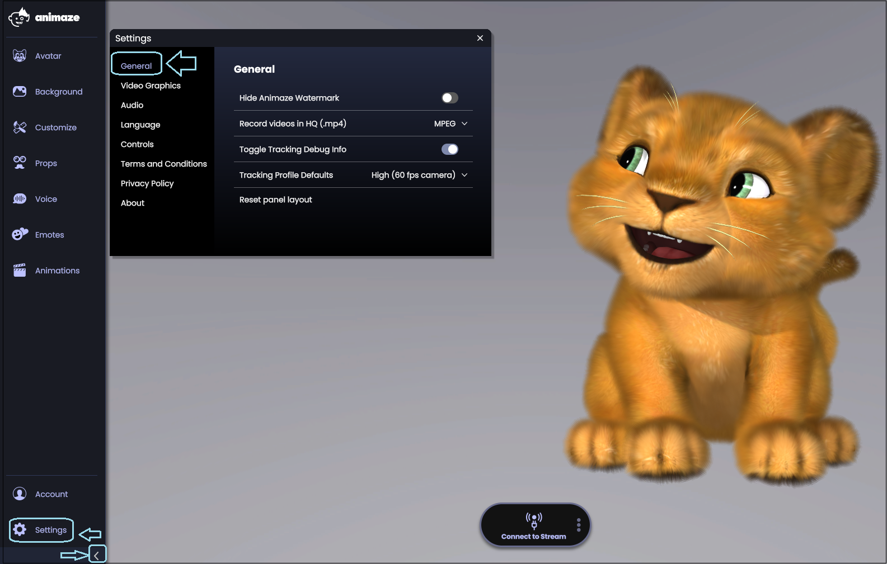
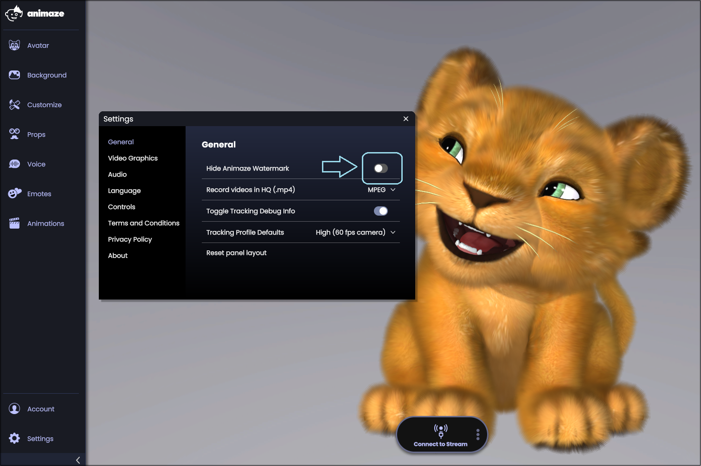
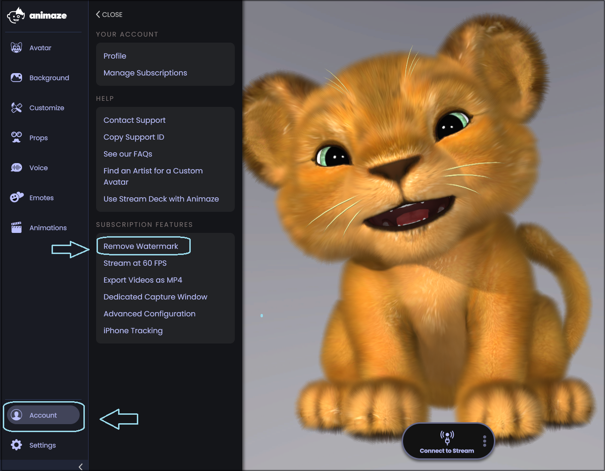

Animaze Desktop: How to remove the Animaze watermark
This feature requires a subscription. If you haven’t subscribed yet, find out how to subscribe here.
-
Open the Menu and choose Settings

-
Toggle the button for Hide Animaze Watermark

Alternatively, you can do the same procedure from the Account button as well from the Main Menu
